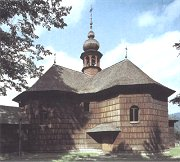
Dřevěný kostel, Velké Karlovice
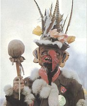
Masopustní maškara „žida“, Dřevíkov u Chrudimi
|
LIDOVÁ SLOVESNOST
Lidová kultura je značně rozsáhlá a pestrá. Kromě lidové slovesnosti ji tvoří lidová hudba, architektura, výtvarné umění, tanec, kroje, nejrůznější slavnosti a další zvyky. Můžeme sem zahrnout také předměty denní potřeby a lidová řemesla. Dá se říci, že lidová kultura tu byla odnepaměti. Řada památek ale zanikla nebo byla zatlačena do pozadí vyšší umělou tvorbou. Lidové umění bylo ponecháno venkovu a významní umělci i vědci se o něj příliš nezajímali. Zlom nastává až s příchodem preromantiků (Herder, Percy) a romantiků, kteří v lidové tvorbě nacházeli inspiraci, dokládali na ní myšlenky o charakteru národa a dávali jejím prostřednictvím najevo své vlastenectví. Také mezi českými buditeli bylo velmi rozšířené sběratelství lidové slovesnosti (Erben, Němcová…) a ohlasová tvorba (Čelakovský). V průběhu 19. století se folkloristika stala regulérní vědou (Zíbrt) a kromě prostého zaznamenávání nebo popisu lidové tvorby začínají vznikat také odborné analýzy různých národopisných jevů.
Lidová slovesnost se přenášela hlavně ústní tradicí, písemné doklady ze starších dob jsou spíše ojedinělé. Autory jednotlivých skladeb většinou neznáme. Protože jeden text mívá mnoho variant, předpokládá se, že autor nebyl jeden, ale lidé si příběhy různě přizpůsobovali. Šlo tedy o tvorbu kolektivní. Texty se liší také jazykově, protože v každé oblasti (vesnici) se mluvilo trochu jiným nářečím. Náměty vycházely z běžného života na venkově, později i ve městech. Jako vzor někdy posloužila oficiální umělecká tvorba.
|
Lidovou slovesnost můžeme rozdělit podle formy – poezie (písně, básně, říkanky…), próza (pohádky, pověsti…) a drama nebo žánrů – lyrika (milostné verše) a epika (pověsti, balady…). Jiné dělení je regionální (Čechy, Morava, Slezsko a jejich části), další vychází z rozsahu textů – útvary krátké (přísloví, pořekadla, pověry…) a dlouhé (lidové hry). Časté je rozlišení podle ročních dob, ke kterým se texty vztahovaly (pranostiky). Některé skladby byly svázány s rokem církevním (velikonoční a vánoční svátky, legendy…), rozvržením zemědělských prací (žně, dožínky, přástky). Důležité je rovněž dělení podle životního stadia – dětství (ukolébavky, hádanky, hry…) a dospělost (svatba, písně o vojně a robotě…). Zvlášť bývá uváděn folklór městský (kramářské písně, anekdoty).
Pokus se vypátrat nějaký zapomenutý lidový zvyk, který nebude nikdo ze třídy znát.
|
Cyklus roku v lidové tvorbě
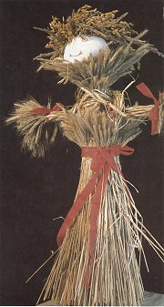
Slaměná figura „bába“ se vyráběla z posledního snopu obilí. Visela ve stodole až do následujících žní.
Které lidové slavnosti a křesťanské svátky znáš? Jaké zvyky se s nimi pojí?
Které tradice udržujete doma? Které udržují tvoji prarodiče?
Zkuste ve třídě oživit nějaký lidový zvyk.
Co je brůna, fašank, klibna, motovidlo, trdlo, líto a klapačka?
Co víš o Peruchtě, Barborkách a Luckách?
Znáš nějaké přísloví nebo pořekadlo? Co vyjadřuje?
|
Cyklus roku v lidové tvorbě
Rytmus života na vesnici určovalo střídání ročních dob a sezónních zemědělských prací. Na jaře, kdy se příroda pomalu probouzela k životu, se topila smrtka a stavěly májky. V létě zakončovaly sklizeň obžínky a dožínky. Podzim byl ve znamení vinobraní, hodů a posvícení. V zimě se konaly přástky a chodilo se k muzice. Při draní peří a za dlouhých nocí si brali slovo lidoví vypravěči.
Letitou zkušenost s proměnami počasí shrnují pranostiky:
Svítí-li slunce na Hromnice, bude zimy o šest neděl více.
Konec masopustu jasný – len krásný.
Březnové slunce má krátké ruce.
Panská láska a dubnový sníh za mnoho nestojí.
Pláče-li červen a neoschne žitko, v zajících, koroptvích budem mít řídko.
Co červenec neuvaří, srpen nedopeče.
Září jezdí na strakaté kobyle.
Když dlouho listí nepadá, tuhá zima se přikrádá.
Chodí-li svatá Kateřina po ledě, chodí svatý Štěpán po blátě.
|
Pevné místo v kalendáři měly křesťanské svátky, které se odehrávaly hlavně v kostele. Nejdůležitější byly Velikonoce a Vánoce. Pojila se s nimi řada zvyků i pověr, které nemají s křesťanstvím nic společného (pomlázka, zdobení stromku...), vařily se zvláštní pokrmy atd. Pohanské kořeny měl také masopust (bujaré oslavy konce postního období). V den místního svatého patrona se konala ve městech i na venkově pouť.
|
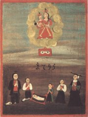
Lidová malba z 18. století
Které pranostiky znáš? Vysvětli jejich význam.
Dají se jevy popsané v pranostikách vědecky vysvětlit?
Zkus ověřit pravdivost vybrané pranostiky.
Nakresli k pranostice ilustraci.
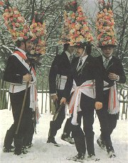
Koledníci na masopustní obchůzce, Dobrovská Lhotka u Trhových Svin
|
Život na vesnici
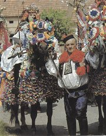
Jízda králů souvisí s tajným přechodem uherského krále přes naše území. Dodnes se slaví na Slovácku a Hané v době letnic. Krále představuje mladý chlapec s růží v ústech, který na koni objíždí vesnici a pole, aby zajistil dobrou úrodu. Podrobně ji popisuje např. Milan Kundera v románu Žert.
Které postavy vystupují v Komedii o turecký vojně?
|
Život na vesnici
Život na venkově nebyl nijak lehký. Do roku 1781 svazovalo většinu lidí nevolnictví a robotovat museli až do roku 1848. Také vojna byla velmi dlouhá, nehledě na války, které dopadaly především na venkovské oblasti (města chránily hradby). Přestože práce na poli byla velmi namáhavá a její výsledky závisely na rozmarech počasí, dokázali si lidé udělat čas na různé zábavy a slavnosti. Dlouhou tradici má jízda králů, vztyčování májů nebo vynášení Morany. Oblíbené byly tancovačky při muzice. Mnoho oslav souviselo s rodinným životem (svatba, narození dítěte, pohřeb...) nebo se společným jídlem (zabíjačka, hody, posvícení...). Většina z nich se pěstuje dodnes. Teatrální popravy domácích zvířat byly ovšem zakázány. Nejrozsáhlejším projevem lidové slovesnosti bylo drama. Loutková představení navštěvovali i dospělí. Lidové hry vycházely z církevních dramat, později i z profesionálních představení předváděných kočovnými herci a oper, které se inscenovaly na zámcích. Většina her měla náboženský charakter (pašijové a vánoční hry), aktuální události se objevují v lidových hrách jen výjimečně (Komedie o turecký vojně ze 17. stol.).
|
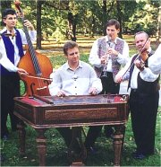
Hradišťan, cimbálová kapela
Kdo je primáš, tercáš, obligát a kontráš?
Co je grumla a bukál?
Kdo byl Fanoš Mikulecký?
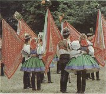
Družičky a družbové tančí po svatbě rúchový tanec se svatebními praporci, Ratíškovice.
|
Člověk v lidové slovesnosti
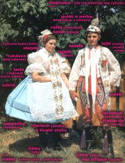
Břeclavský kroj
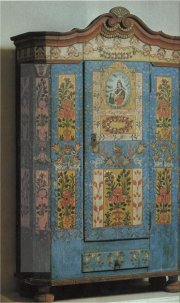
Malovaná skříň z Turnovska
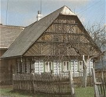
Pojizerský roubený dům
|
Člověk v lidové slovesnosti
Dětem byly určeny pohádky. Učily se na nich rozlišovat dobro a zlo a nenásilně si jejich prostřednictvím osvojovaly základní životní hodnoty. České pohádky jsou zalidněny řadou nadpřirozených bytostí (vodníci, čerti, víly...). Nemohou v nich chybět kouzla (pohádkový dědeček, živá voda...). Typickými postavami jsou Honza, kterého ostatní považují za hloupého nebo líného, někdy se ale ukáže, že se v něm mýlili, nebo králové a princezny. Zvířata v pohádkách jednají jako lidé (O kohoutkovi a slepičce, pták Ohnivák, liška Ryška...).
Znáš nějakou lidovou hádanku, říkanku, rozpočitadlo nebo dětskou hru?
Dospělí si vyprávěli pověsti. Většina z nich se vztahuje ke konkrétním místům (hrady, skály, stromy...), nadpřirozeným bytostem (Krakonoš, různá strašidla) nebo k historickým osobnostem (císař Josef II., zbojník Ondráš). Pověsti byly plné tajemna a upozorňovaly na důsledky porušení nějakého tabu (zaprodání se čertu, vražda...).
Vyhledej a převyprávěj nějakou pověst, která se vztahuje k oblasti, kde bydlíš.
Obrovský tematický záběr měly lidové písně. Těžko hledat námět, který by v nich nebyl zpracován. Nejvýznamnější jsou duchovní písně, lyrické ukolébavky, milostné písně, veselé popěvky, balady a skladby zpívané u příležitosti různých slavností.
|
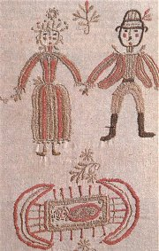
Nevěsta, ženich a kolébka, výšivka na svatebním praporci
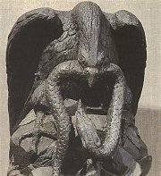
Bohatě zdobený včelí úl
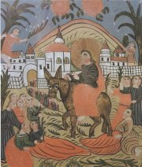
Vjezd do Jeruzaléma, malba na skle z roku 1820
Umíš zazpívat některou z uvedených písní?
Které lidovky znáš?
|
Kramářské písně patří do slovesnosti pololidové, podobně jako zápisky písmáků nebo kronikářské záznamy. Od lidové slovesnosti se odlišují jednotným textem bez variant, vyšším vzděláním autorů a jejich částečnou profesionalizací – jarmareční písně byly tištěné, skládali je např. faráři nebo kantoři a prodávaly se na trzích.
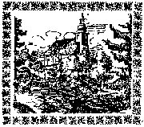
Kramářská píseň Jeskyně, titulní strana jarmarečního tisku
|
Kramářská píseň
Kramářské (jarmareční) písně se zpívaly hlavně na tržištích. Melodie vycházely z všeobecně známého nápěvu, texty byly původní. Kramářské písně popisovaly mordy (Nová píseň o vražedném činu, který spáchal Jan Prskáček dne 20. června běžícího roku na Antonii Tvrzníkové a sám na sobě co milenci roku 1892, blíže Českého Dubu), katastrofy (Truchlivá píseň o veliké povodni v Čechách pocházejíc nejvíce z hor krkonošských dne 1., 2. a 3. srpna 1858), ale najdou se mezi nimi i písně satirické (Nová píseň o hrozném zfalšování starých památek, objeveném skrze dvě hvězdy českých a vysokých škol pražských roku tohoto) nebo duchovní. Součástí vystoupení byla deska s obrázky, které ilustrovaly hlavní momenty děje. Jednotlivé písně vycházely zároveň jako levné tisky, které si mohli zákazníci od kramáře koupit a příležitostně si je zazpívat.
|
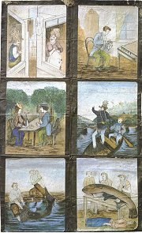
Pokus se podle obrázků zrekonstruovat děj této kramářské písně.
Vytvoř podle těchto obrázků kramářskou píseň.
Co mají kramářské písně společného s novinami? V čem se liší?
|
Internetové stránky
Folklor, portál
Čelakovský: Slovanské národní písně
Erben: Prostonárodní české písně a říkadla
České lidové písně
Čechomor, Hradišťan, Hutka, texty lidových písní
Killar: Rybrcol na Krkonošských horách
Zvyky a pranostiky
České tradice
Zvyky našich předků
Dobové zvyky a tradice
Lidové zvyky a řemesla
Lidová architektura
Jízda králů, Vlčnov
Kroje
Kroje
Kroje
Kroje Moravy
Ústav lidové kultury ve Strážnici
Pohádky, rozcestník
Písková: K informativní složce kramářských tisků
Kramářské písně
Speleologická píseň kramářská
Knihovna Národního muzea, Fond kramářských tisků
Lidové hry, texty
Etnologický ústav AV ČR
Český lid, časopis
Pohádky a pověsti
|
Doporučená četba
Beneš, B.: Světská kramářská píseň, Brno 1970
Černá slepice aneb Kterak se líhne bazalíček, jenž do domu štěstí přináší, Praha 1991
Česká lidová slovesnost, Odeon, Praha 1990
Český rok v pohádkách, písních, hrách a tancích, říkadlech a hádankách (4 svazky podle ročních dob)
Dubská, Alice: Dvě století českého loutkářství, AMU, Praha 2004
Frolcová, Věra: Velikonoce v české lidové kultuře, Vyšehrad, Praha 2001
Frolec, V.: Vánoce v české kultuře, Vyšehrad, Praha 1989
Hrabák, J.: Lidové drama pobělohorské, Praha 1951
Hulpach, Vladimír: Báje a pověsti z Čech a Moravy, Libri
Janoušek, B.: Pašijové hry v Hořicích na Šumavě, České Budějovice 1948
Kalista, Z.: Selské čili sousedské hry českého baroka, Praha 1942
Kneidl, Pravoslav: Česká lidová grafika v ilustracích novin, letáků a písniček, Odeon, Praha 1983
Kubín, Josef Štefan: Strakatý máslo, Maťa, Praha 1997
Láska a smrt, Výbor lidové poezie, Československý spisovatel, Praha 1983
Nachodil, Robek: České lidové pověry, Orbis, Praha 1953
Scheybal, Josef. V.: Senzace pěti století v kramářské písni, Kruh, Hradec Králové 1991
Souček, S.: Rakovnická hra vánoční, Brno 1929
Stejskal, Martin: Labyrint tajemna aneb Průvodce po magických místech Československa, Paseka, Praha 1991
Vavřinová, Valburga: Malá encyklopedie Vánoc, Libri, Praha 2000
Vondruška, Vlastimil: Církevní rok a lidové obyčeje, Dona, Praha 1991
Zaorálek, Jaroslav: Lidová rčení, Praha 1963
|
Tipy
Lidové kultuře se soustavně věnuje brněnské nakladatelství Blok.
Krušnohorci, mystifikace
Filmy
Opera ve vinici, režie J.Jireš
Don Šajn, režie J.Švankmajer
Exkurze
Muzeum českého venkova, zámek Kačina
Valašské muzeum v přírodě, Rožnov pod Radhoštěm
Skanzeny na Seznamu
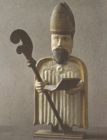
Svatý Cyril z Valašska
|
|